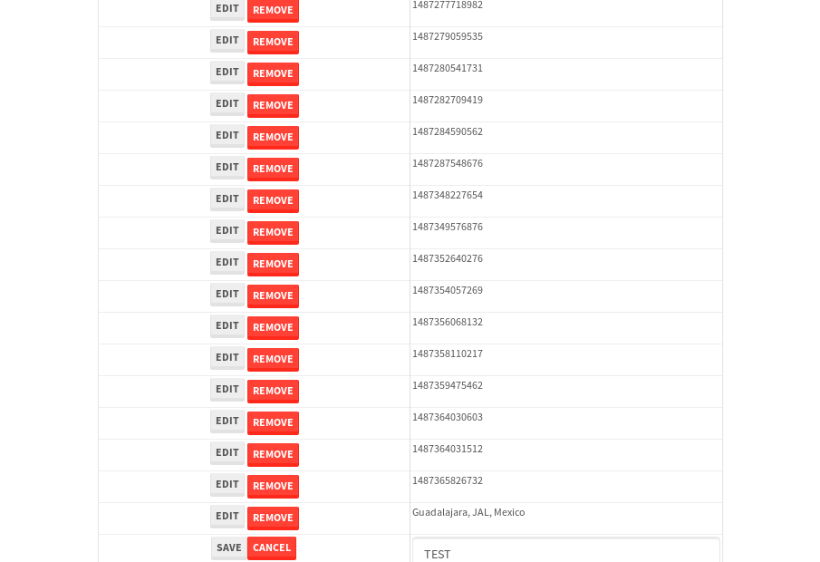

tbColumn.Grid Sorting - 27.777sTests: 5Skipped: 0Failures: 0 should sort data in ascending order then on descending order when sorting by Order Id column - 5.522sTests passed: 100.00%should order data in ascending order when click-sorting an unsorted text column - 5.011sTests passed: 100.00%should order data in descending order when click-sorting an ascending-sorted text column - 5.722sTests passed: 100.00%should order data in ascending order when click-sorting an unsorted date column - 5.318sTests passed: 100.00%should order data in descending order when click-sorting twice an unsorted date column - 6.204sTests passed: 100.00%
tbColumn.Grid Components - 4.579sTests: 3Skipped: 0Failures: 0 should print grid - 1.838s***Skipped***Tests passed: 0%should export grid - 1.387s***Skipped***Tests passed: 0%should show column selector - 1.353sTests passed: 100.00%
tbSingleForm.Form validations - 2.937sTests: 2Skipped: 0Failures: 0 should have an empty required field - 1.689sTests passed: 100.00%should not be able to click on save - 1.248sTests passed: 100.00%
Tubular Filters.tbColumnFilter - 113.791sTests: 12Skipped: 0Failures: 0 should cancel filtering when clicking outside filter-popover - 10.553sTests passed: 100.00%should disable Value text-input for "None" filter - 6.745sTests passed: 100.00%should disable apply button for "None" filter - 7.089sTests passed: 100.00%should decorate popover button when showing data is being filtered for its column - 12.117sTests passed: 100.00%should correctly filter data for the "Equals" filtering option - 9.528sTests passed: 100.00%should correctly filter data for the "Not Equals" filtering option - 9.124sTests passed: 100.00%should correctly filter data for the "Contains" filtering option - 8.783sTests passed: 100.00%should correctly filter data for the "Not Contains" filtering option - 10.212sTests passed: 100.00%should correctly filter data for the "Starts With" filtering option - 7.246sTests passed: 100.00%should correctly filter data for the "Not Starts With" filtering option - 7.245sTests passed: 100.00%should correctly filter data for the "Ends With" filtering option - 7.003sTests passed: 100.00%should correctly filter data for the "Not Ends With" filtering option - 6.863sTests passed: 100.00%
Tubular Filters.tbColumnDateTimeFilter - 138.732sTests: 12Skipped: 0Failures: 0 should cancel filtering when clicking outside filter-popover - 8.191sTests passed: 100.00%should disable Value text-input for "None" filter - 6.759sTests passed: 100.00%should disable apply button for "None" filter - 7.219sTests passed: 100.00%should clear filtering when clicking on Clean button - 18.131sTests passed: 100.00%should decorate popover button when showing data is being filtered for its column - 12.549sTests passed: 100.00%should correctly filter data for the "Equals" filtering option - 7.007sTests passed: 100.00%should correctly filter data for the "Not Equals" filtering option - 7.453sTests passed: 100.00%should correctly filter data for the "Between" filtering option - 12.535sTests passed: 100.00%should correctly filter data for the "Greater-or-equal" filtering option - 11.987sTests passed: 100.00%should corretlly filter data for the "Greater" filtering option - 12.269sTests passed: 100.00%should correctly filter data for the "Less-or-equal" filtering option - 12.145sTests passed: 100.00%should correctly filter data for the "Less" filtering option - 11.764sTests passed: 100.00%
Tubular Filters.tbColumnOptionsFilter - 82.471sTests: 3Skipped: 0Failures: 0 should cancel filtering when clicking outside filter-popover - 9.623sTests passed: 100.00%should decorate popover button when showing data is being filtered for its column - 12.277sTests passed: 100.00%should filter column-elements in accordance to the selected filter when selecting a single option - 49.586sTests passed: 100.00%
Tubular Filters.tbTextSearch - 48.71sTests: 5Skipped: 0Failures: 0 min-chars is not set - 1.135sTests passed: 100.00%should filter data in searchable-column customer name to matching inputted text, starting from 3 characters - 6.696sTests passed: 100.00%should filter data in searchable-column shipper city to matching inputted text, starting from 3 characters - 12.166sTests passed: 100.00%should show clear button when there is inputted text only - 6.574sTests passed: 100.00%should clear filtering when clicking clear button - 16.602sTests passed: 100.00%
tbForm related components.tbCheckboxField - 6.893sTests: 2Skipped: 0Failures: 0 should save changes on "SAVE" - 3.376sTests passed: 100.00%should discard changes on "CANCEL" - 2.035sTests passed: 100.00%
tbForm related components.tbDropDownEditor - 12.176sTests: 5Skipped: 0Failures: 0 should set initial input value to the value of "value" attribute when defined - 2.057sTests passed: 100.00%should show the component name value in a label field when "showLabel" attribute is true - 1.975sTests passed: 100.00%should show a help field equal to this attribute, is present - 2.487sTests passed: 100.00%should submit modifications to item/server when clicking form "Save" - 2.906sTests passed: 100.00%should NOT submit modifications to item/server when clicking form "Cancel" - 2.241sTests passed: 100.00%
tbForm related components.tbTextArea - 19.173sTests: 7Skipped: 0Failures: 0 should set initial input value to the value of "value" attribute when defined - 2.187sTests passed: 100.00%should be invalidated when the number of chars is not in the range of "min" and "max" attributes - 2.419sTests passed: 100.00%should show the component name value in a label field when "showLabel" attribute is true - 1.679sTests passed: 100.00%should show a help field equal to this attribute, is present - 2.188sTests passed: 100.00%should require the field when the attribute "required" is true - 2.786sTests passed: 100.00%should submit modifications to item/server when clicking form "Save" - 4.305sTests passed: 100.00%should NOT submit modifications to item/server when clicking form "Cancel" - 2.307sTests passed: 100.00%
tbForm related components.tbDateEditor - 14.254sTests: 6Skipped: 0Failures: 1 should set initial date value to the value of "value" attribute when defined - 1.926sTests passed: 100.00%should be invalidated when the date is not in the range of "min" and "max" attributes - 2.759sTests passed: 100.00%should show the component name value in a label field when "showLabel" attribute is true - 1.672sTests passed: 100.00%should show a help field equal to this attribute, is present - 1.657sTests passed: 100.00%should submit modifications to item/server when clicking form "Save" - 3.095sExpected false to be true.✗Tests passed: 0.00%should NOT submit modifications to item/server when clicking form "Cancel" - 2.141sTests passed: 100.00%
tbForm related components.tbTypeaheadEditor - 18.884sTests: 7Skipped: 0Failures: 0 should show an options list when there is an API-info/component entered-data - 1.978sTests passed: 100.00%should select the option clicked - 2.035sTests passed: 100.00%should show a "delete" button when an option/match is selected, and delete the option if button is clicked - 3.986sTests passed: 100.00%should show a label value equal to the component name when "showLabel" attribue is true - 1.828sTests passed: 100.00%should require a value when "require" attribute is true - 2.168sTests passed: 100.00%should submit modifications to item/server when clicking form "Save" - 3.802sTests passed: 100.00%should NOT submit modifications to item/server when clicking form "Cancel" - 2.519sTests passed: 100.00%
tbForm related components.tbSimpleEditor - 22.118sTests: 9Skipped: 0Failures: 0 should set initial input value to the value of "value" attribute when defined - 1.92sTests passed: 100.00%should be invalidated when the number of chars is not in the range of "min" and "max" attributes - 2.611sTests passed: 100.00%should show the component name value in a label field when "showLabel" attribute is true - 1.9sTests passed: 100.00%should set input placeholder to the value of "placeholder" attribute - 2.113sTests passed: 100.00%should validate the control using the "regex" attribute, if present - 2.761sTests passed: 100.00%should show a help field equal to this attribute, is present - 1.867sTests passed: 100.00%should require the field when the attribute "required" is true - 2.144sTests passed: 100.00%should submit modifications to item/server when clicking form "Save" - 3.874sTests passed: 100.00%should NOT submit modifications to item/server when clicking form "Cancel" - 2.275sTests passed: 100.00%
tbForm related components.tbNumericEditor - 18.84sTests: 7Skipped: 0Failures: 0 should set initial component value to the value of "value" attribute when defined - 1.808sTests passed: 100.00%should be invalidated when the entered number is not in the range of "min" and "max" attributes - 3.753sTests passed: 100.00%should show the component name value in a label field when "showLabel" attribute is true - 2.053sTests passed: 100.00%should show a help field equal to this attribute, is present - 2.482sTests passed: 100.00%should require the field when the attribute "required" is true - 2.233sTests passed: 100.00%should submit modifications to item/server when clicking form "Save" - 3.367sTests passed: 100.00%should NOT submit modifications to item/server when clicking form "Cancel" - 2.333sTests passed: 100.00%
tbForm Connection Error NoModelKey - 3.099sTests: 1Skipped: 0Failures: 0 tbForm connection error functionality - 0.509sTests passed: 100.00%
tbForm Connection Error NoServerUrl - 3.55sTests: 1Skipped: 0Failures: 0 tbForm connection error functionality - 0.6sTests passed: 100.00%
tbGridComponents - 33.732sTests: 6Skipped: 0Failures: 4 should add item with newRow method - 4.131sExpected 'EDIT REMOVE TEST' not to be 'EDIT REMOVE TEST'.✗Tests passed: 50.00%should add item with newRow method and cancel action - 1.141sTests passed: 100.00%should update item with tbSaveButton - 1.992sExpected '' to be 'TEST'.✗Tests passed: 0.00%should NOT update item on cancel Update action - 1.121sFailed: ElementNotVisibleError✗Tests passed: 0.00%should remove item with tbRemoveButton - 21.695sExpected 52 not to be 52, 'should remove the row from the table'.✗Tests passed: 50.00%should NOT remove item on cancel Remove action - 1.201sTests passed: 100.00%
tbGridPager.navigation buttons - 10.269sTests: 1Skipped: 0Failures: 0 should perform no action when clicking on the numbered navigation button corresponding to the current-showing results page - 1.388sTests passed: 100.00%
tbGridPager.navigation buttons.first/non-last results page related functionallity - 4.256sTests: 2Skipped: 0Failures: 0 should disable "first" and "previous" navigation buttons when in first results page - 1.885sTests passed: 100.00%should enable "last" and "next" navigation buttons when in a results page other than last - 2.371sTests passed: 100.00%
tbGridPager.navigation buttons.last/non-first results page related functionallity - 4.625sTests: 2Skipped: 0Failures: 0 should disable "last" and "next" navigation buttons when in last results page - 2.01sTests passed: 100.00%should enable "first" and "previous" navigation buttons when in a results page other than first - 2.615sTests passed: 100.00%
tbGridPager.page navigation - 8.279sTests: 5Skipped: 0Failures: 0 should go to next results page when clicking on next navigation button - 2.226sTests passed: 100.00%should go to previous results page when clicking on previous navigation button - 1.77sTests passed: 100.00%should go to last results page when clicking on last navigation button - 1.752sTests passed: 100.00%should go to first results page when clicking on first navigation button - 1.312sTests passed: 100.00%should go to corresponding results page when clicking on a numbered navigation button - 1.219sTests passed: 100.00%
tbGridPagerInfo - 5.728sTests: 2Skipped: 0Failures: 0 should show text in accordance to numbered of filter rows and current results-page - 1.564sTests passed: 100.00%should show count in footer - 0.569sTests passed: 100.00%
tbHttp - 19.877sTests: 8Skipped: 1Failures: 0 should be authenticated - 2.482sTests passed: 100.00%retrieve data - 2.416sTests passed: 100.00%should not login bad credentials - 3.505sTests passed: 100.00%should have a refresh token - 2.403sTests passed: 100.00%should remove authentication - 2.863sTests passed: 100.00%get method-Is not authenticated - 2.411sTests passed: 100.00%post method-Is not authenticated - 3.793sTests passed: 100.00%should regenerate access token on post - 0.001s***Skipped***Tests passed: 0%
tbPageSizeSelctor - 10.379sTests: 4Skipped: 0Failures: 0 should filter up to 10 data rows per page when selecting a page size of "10" - 2.411sTests passed: 100.00%should filter up to 20 data rows per page when selecting a page size of "20" - 1.598sTests passed: 100.00%should filter up to 50 data rows per page when selecting a page size of "50" - 2.518sTests passed: 100.00%should filter up to 100 data rows per page when selecting a page size of "100" - 2.122sTests passed: 100.00%
tbRowSelectable - 10.862sTests: 2Skipped: 0Failures: 0 selected rows - 5.326sTests passed: 100.00%unselected rows - 3.928sTests passed: 100.00%
tbSingleForm - 22.979sTests: 8Skipped: 0Failures: 1 should load correct info - 2.63sTests passed: 100.00%should change customer name - 2.892sTests passed: 100.00%should save it - 2.782sFailed: Element is not enabled✗Tests passed: 0.00%should clear the inputs - 3.645sTests passed: 100.00%should update - 2.928sTests passed: 100.00%should reset editor - 2.502sTests passed: 100.00%should not save if not Changes - 2.841sTests passed: 100.00%should not be able to click on save - 2.757sTests passed: 100.00%


{kind=link}